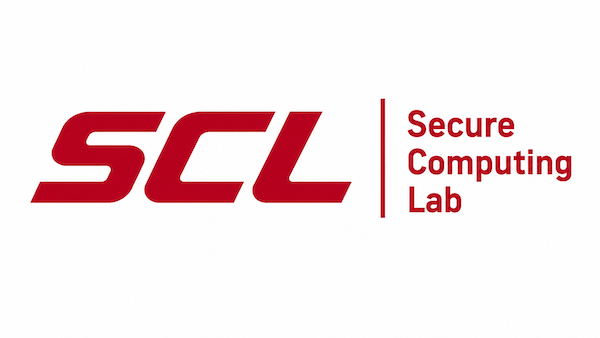
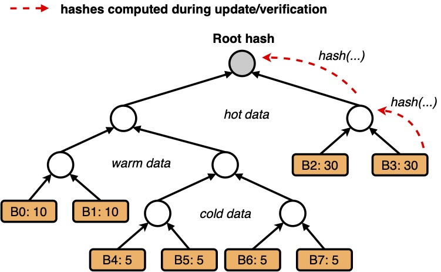
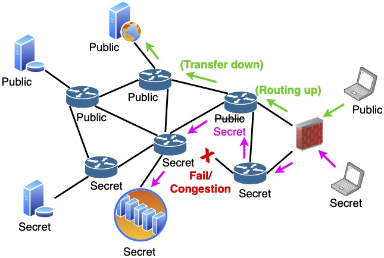

The Secure Computing Lab (SCL) is a research laboratory in the Department of Computer Science at the University of Arizona that examines cutting-edge problems in cybersecurity. It is led by Prof. Quinn Burke. Our focus is on building robust systems infrastructure for emerging cloud and edge applications that is secure, reliable, and scalable. We leverage emerging hardware security features and advanced cryptography, integrating techniques in systems building, cryptographic protocol design, and large-scale performance evaluation. We apply these ideas across storage and networking, software supply chains, AI/agentic systems, and other critical infrastructure where trustworthy computation is essential.
Students and researchers who join early will help shape a new research group, working closely with Prof. Burke on ambitious systems security projects and publishing in top security and systems conferences and journals. Curious and self-motivated students and researchers with different backgrounds and levels of experience are all welcome to apply. Strong applicants will usually have experience in one or more of the following areas: computer security, systems programming, distributed systems, cloud computing, applied cryptography, trusted execution environments, cloud storage systems, computer networking, or large-scale performance evaluation. Applicants with strong engineering portfolios, open-source contributions, research experience, or other substantial independent projects are especially encouraged to reach out.
Leveraging trusted execution environments (TEEs) to protect cloud workloads and enable verifiable computation on sensitive data.
Read moreEfficient integrity checking, encrypted file systems, and auditable state management for cloud and edge storage platforms.
Read moreSecurity in software-defined networking (SDN) and cloud environments, including IP address allocation, load balancing, and multilevel security networks.
Read moreIntrusion detection, system monitoring, and tamper-evident telemetry pipelines for threat detection and response.
Agent sandboxing, secure AI runtimes, and trustworthy infrastructure for machine learning workloads and automated pipelines.
Verifiable and tamper-evident system designs that protect the integrity of software from build to deployment.
Confidential computing keeps an application's state protected inside a trusted execution environment, but that state has to be persisted somewhere the platform does not trust, and persisted state can always be swapped for an older copy. The security community has studied this almost entirely through an adversarial lens: rollback is an attack, freshness is the goal, and a correct system is one that refuses to ever run on stale state. That framing is incomplete. Rolling a service back to a known‑good state is a routine and often essential DevOps operation: it is how operators recover from a bad deploy, a corrupted update, or a failed migration. A design that makes rollback impossible does not only frustrate attackers; it takes away a recovery path that operators genuinely depend on.
Our work resolves that tension by treating rollback as a feature to be secured rather than a failure to be prevented. We designed cryptographic protocols that separate an authorized rollback from an adversarial one: state advances through commitments anchored in the hardware's trust, and rewinding requires explicit authorization that leaves durable evidence behind. Operators keep the recovery path they need, while a client can still establish which state it is talking to and whether that state was ever rolled back, and by whom.
Key result
Selected publications

Ensuring the integrity of data stored in the cloud is an important element of cloud security, but it requires executing complex cryptographic checks on data whenever it is read from or written to storage. These checks can degrade storage performance by up to 90%, rendering the performance capabilities of modern storage devices (e.g., NVMe SSDs) useless and creating a strong economic incentive for storage administrators to disable protections in practice. Our work was the first to quantitatively explain why these overheads occur in modern settings: CPU hashing speeds are the bottleneck (previously hidden by slower disk speeds), overheads increase non‑linearly, and the underlying integrity data structures are static.
Building on this analysis, we designed an optimal data structure that establishes a lower bound on integrity cost for a given workload profile, then built a new adaptive structure that learns on the fly (without a priori knowledge) and performs near‑optimally across small‑ and large‑scale storage. In complementary work, we formalized secure deferral of verification by coupling asynchronous execution to simple commit and admission rules tied to durability, which moves integrity work off the critical path while remaining hardware anchored and crash consistent, delivering robust integrity protections at near‑zero cost.
Key result
Selected publications

Modern cloud networks increasingly rely on software‑defined networking (SDN), whose programmability enables flexible control but also creates new security challenges. We have leveraged SDN programmability to enforce secure information‑flow policies directly in the routing fabric (at every hop), mitigating configuration errors and limiting attacker lateral movement when endpoint rules are misconfigured or bypassed.
We have also examined vulnerabilities arising from SDN's control–data plane separation, showing how strategic manipulations of inputs to SDN controllers (e.g., traffic load reports from switches) can mislead load balancers and degrade availability while evading state of the art detection mechanisms. Moreover, we have contributed to analyzing side channels in SDN data planes. These works have produced insights that have informed the design of new defenses for SDN control and data planes.
Key result
Selected publications